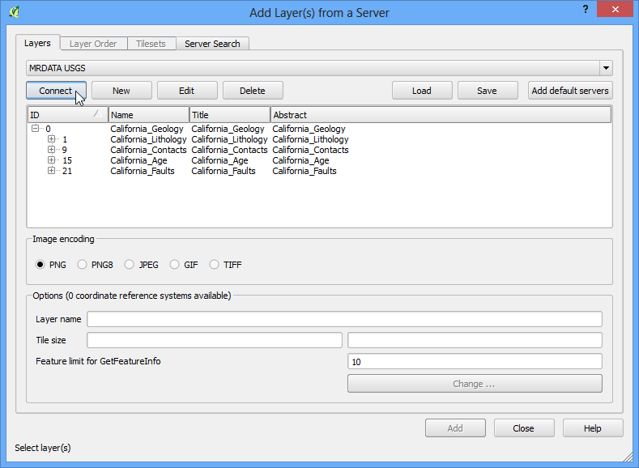
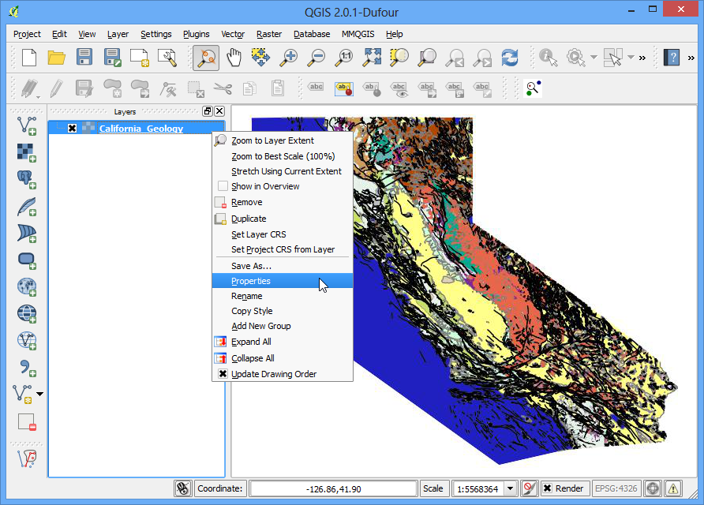

WMS 資料的操作
在某些情況下，有些資料需要其他的「參考圖層」，例如說地圖底圖，來一同呈現。目前許多機構或組織會把他們的圖資放上網，並且整理成讓許多人可以馬上使用 GIS 工具開啟的格式。WMS (Web Map Service, 線上地圖服務) 就是其中一種讓地圖在網路上流通的標準，它省去了許多麻煩，尤其是我們可以不用花時間在下載一大堆參考圖層、或是修改這些圖層的樣式上。
內容說明
本教學會示範如何讀取美國地質調查局（USGS）提供的礦產資源地圖庫中的加州地質圖。
資料來源 [MRDATA]
操作流程
打開 QGIS，選擇 。

在 圖層 分頁中，按下 新增 鈕，

首先要為連線取個名稱，這個名稱是用來識別不同的 WMS 連線服務，不會作為圖層的名稱。WMS 的提供者通常會在他們的連線中一次放上許多不同的圖層讓使用者選擇。如果要存取 WMS 圖層，得在網址中加上 GetCapabilities 參數，它會回傳所有可以使用的圖層以及它們的詮釋資料。我們接著進行如下操作：把名稱取作 MRDATA USGS ，然後 GetCapabilities 網址是 http://mrdata.usgs.gov/services/ca?request=getcapabilities&service=WMS&version=1.1.1& ，然後按 確定。

再來，按下 連線 後，就可以取得所有可供使用的圖層。每個圖層都有它們˙各自的 ID 號碼，ID 0 指的是包含所有圖層的圖資，如果你不想要所有圖層的話，可以在 + 的圖示下按一下以展開列表，然後再選擇那些你想要的圖層。這邊我們使用 0 圖層來繼續我們的示範。

在 影像編碼 欄位中，要選擇一種影像格式。要選哪一種影像格式與你要用底圖來做什麼事有很大的關係，簡單說明如下：
影像品質：PNG 是無失真壓縮，JPEG 則是失真的壓縮，而 TIFF 兩種都可以相容。因此 PNG 的影像品質會比 JPEG 要好，如果你最終想要把地圖列印出來的話，就選 PNG。
讀取速度：因為 PNG 是無失真的大尺寸檔案，所以要花比較久的時間讀取，如果你只是要一個參考地圖，讓你在 QGIS 中放大、縮小或是改變位置時不會迷失，那就使用 JPEG 吧。
客戶端支援：雖然 QGIS 支援幾乎所有的格式，不過如果你是要拿來作網頁或 APP，瀏覽器通常會不支援 TIFF，所以用其他兩種格式較好。
資料種類：如果要下載的圖層原始來源是向量檔的話，PNG 會呈現得比較好；如果原始就是是影像圖層的話，JPEG 通常才是不錯的選擇。
本教學中，我們選擇 JPEG 來當作圖資的格式。底下的圖層名稱也可以自由更改。最後按下 加入。

圖層就會被載到 QGIS 畫布中，而且就跟一般的圖層一樣，可以放大、縮小或拖曳。WMS 服務運作的原理是當你每次拖曳或放大縮小圖層時，它會把你的視圖座標和尺寸上傳到 WMS 伺服器，然後伺服器會針對你的視圖製作影像再傳到你的顯示框中，所以你會發現每次改變顯示區域的時候，總是要等一下，圖才會出現。另外一件不同的地方是，由於 WMS 傳給你的是一般的圖片檔，所以沒有辦法像一般的向量或網格式影像圖層那樣查閱屬性。

不過，至少它是有詮釋資料的。在這個圖層上按右鍵，選擇 屬性，

你會發現 屬性 視窗跟一般圖層相比有點不同，而且少了許多分頁。在 詮釋資料 分頁中，就可以看到許多有關於 WMS 服務和本圖層的許多資訊。